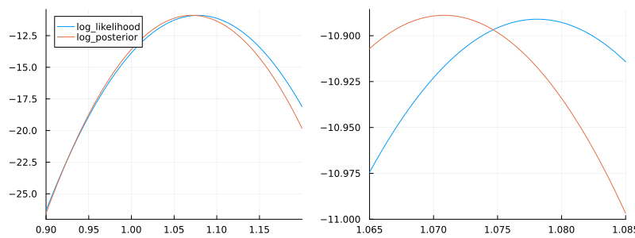

Logarithmic posterior probability: How to implement
Consider the data and model from Simple example:
X = collect(1:10)
Y = [1.0, 1.78, 3.64, 3.72, 5.33, 2.73, 7.52, 9.19, 6.73, 8.95]
ΔY = [0.38, 0.86, 0.29, 0.45, 0.66, 2.46, 0.39, 0.45, 1.62, 1.54]
model = ModelFunctions((x,λ)-> λ*x)Log-likelihood and log-posterior
The general procedure to obtain the log-likelihood and log-posterior functions is the same as described in Posterior probability: How to implement. However, the distributions and the prior need to be in logarithmic form. Thus, the default distributions of the FittingData constructor do not work. Instead, a FittingData object with logarithmic distributions needs to be created:
using Distributions
data_log_dists = FittingData(X,Y,ΔY,distributions = (y,m,Δy)-> logpdf(Normal(m,Δy),y))The log-likelihood function can be obtained by using the log_posterior_objective function:
log_likelihood = log_posterior_objective(data_log_dists,model)As described in Using priors, the likelihood is obtained by using the prior λ-> 1 (or in the logarithmic case λ-> 0). Again, this is what happens in the background. To use a prior, it just needs to be passed as third argument:
log_posterior = log_posterior_objective(data_log_dists,model, λ-> logpdf(Normal(1,0.1),λ))The resulting functions can be compared by adjusting the constant offset (see Logarithmic scale)
Application: Regularized least squares
Consider the weighted least squares objective from LSQ:-How-to-implement
lsq = lsq_objective(data_log_dists, model)Note that the distributions field of data_log_dists has no effect on least squares objectives.
To replicate the least squares objective, unnormalized logarithmic normal distributions can be used:
data_lsq_dists = FittingData(X,Y,ΔY, distributions = (y,m,Δy)-> -(y-m)^2/Δy^2)
lsq_likelihood = log_posterior_objective(data_lsq_dists,model)The lsq_likelihood is the same function as lsq, but with the opposite sign (because it is a logarithmic unnormalized posterior probability density). This can be fixed by using λ -> -lsq_likelihood(λ).
Now, a regularization can be implemented by using a corresponding logarithmic prior:
lsq_posterior = log_posterior_objective(data_lsq_dists,model, λ -> - λ^2)Partial derivatives and gradients
Analytical derivatives can be obtained almost in the same way as for the least squares objective derivatives with log_posterior_partials and log_posterior_gradient. However, two additional arguments need to be provided: the partial derivatives of the logarithmic $y$-uncertainty distributions and the gradient of the prior distribution.
To illustrate the process, we consider a normal distribution as logarithmic $y$-uncertainty distribution.
data = FittingData(X,Y,ΔY,distributions = (y,m,Δy)-> -(m-y)^2/(2Δy^2))As for the least squares objective derivatives, the partial derivatives of the model need to be added to the ModelFunctions object:
model = ModelFunctions((x,λ)-> λ*x, partials = [(x,λ)-> x])The partial derivative of the logarithmic $y$-uncertainty distribution (w.r.t. the model function value) is
\[\frac{\partial}{\partial m} L(y,m,\Delta y) = \frac{\partial}{\partial m} - \frac{(m-y)^2}{2\Delta y^2} = - \frac{(m-y)}{\Delta y^2}\]
∂_mL(y,m,Δy) = -(m-y)/(Δy^2)Since the parameter in this example is one-dimensional, the gradient of the prior distribution is just the derivative. Thus, if the prior distribution is $p_0(\lambda) = - (\lambda-1)^2$, the gradient is
\[\nabla p_0(\lambda)= \frac{d}{d\lambda} - \lambda^2 = -2(\lambda-1)\]
# Define the gradient for the prior as vector of functions.
# Even in the 1-dim case.
∇p_0 = [λ -> -2*(λ-1)]The partial derivatives of the log-posterior can now be obtained with log_posterior_partials:
log_partials = log_posterior_partials(data_log_dists,model, ∂_mL, ∇p_0)1-element Vector{Function}:
#36 (generic function with 1 method)log_partials[1](1.078)-0.06327403301740508